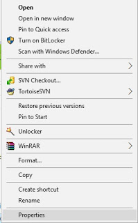
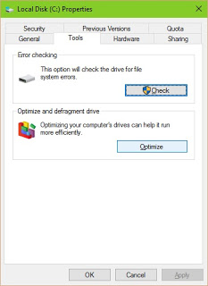
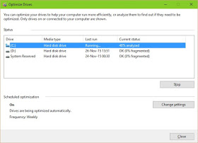
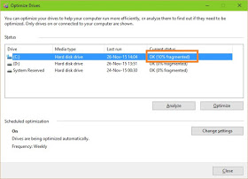
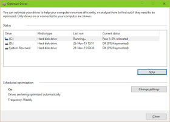

Pengertian dan Cara Defrag / Defragment Hardisk Tanpa Software
By Awaludin Siking
Apa itu Defrag/Defragment ? Defrag/Defragment berarti merapihkan. Apa yang dirapihkan ? Yang dirapihkan yaitu file file yang berada dalam hardisk. File dalam hardisk sudah rapi. Sudah dimasukan dalam folder ! Defrag bukan berarti merapihkan dan menyusun file dalam folder, tetapi defrag berarti merapihkan kembali lokasi file dalam sektor di hardisk agar sektor -sektor kosong dan sektor – sektor yang terisi dalam hardisk tersusun secara urut sehingga alokasi sektor tidak berantakan.
Apa Pengaruhnya ? Pengaruhnya adalah Kinerja hardisk kita jadi lebih cepat karena susunan data terstruktur dengan rapih. Apa yang menyebabkan file tersebut berantakan ? Penyebabnya bisa karena proses copy data atau proses instalasi software. Saat software di install maka sektor sektor dalam hardisk akan terisi dan saat kita uninstall maka sektor yang terpakai tersebut akan kosong sehingga mengakibatkan terdapat beberapa sektor kosong diantara sektor yang terisi.
Bagaimana cara melakukan defrag ? Defrag dapat dilakukan dengan menggunakan software seperti Tune-Up utility. Namun Sistem Operasi windos sebenarnya sudah menyediakan cara untuk melakukan defrag. Caranya yaitu :
1. Masuk Ke My Computer.
2. Klik kanan pada salah satu Partisi Hardisk lalu pilih properties

3. Pilih Menu Tools yang ada pada properties lalu klik optimize

4. Lalu akan muncul windows baru yaitu optimize drive. Pilih Drive yang akan di Defrag.
5. Tombol Analyze untuk mengecek keadaan sektor dari partisi tersebut. Sedangkan Tombol Optimize untuk melakukan Defrag pada hardisk. Ada baiknya lakukan dulu proses Analyze untuk melihat apakah hardisk kita perlu di defrag atau tidak. Jika hardisk dalam keadaan rapih, kita tidak perlu melakukan Defrag karena Defrag akan memakan waktu yang cukup lama ( Tergantung kapasitas Hardisk )


6. Jika sudah yakin dan ingin melakukan Defrag klik tombol optimize. Catatan: Proses Defrag biasanya agak lama dan mungkin terjadi komputer HANG atau LEMOT saat melakukan proses Defrag dikarenakan data data yang berada dalam hardisk sedang dalam proses perpindahan sektor (relokasi).

7. Kita Dapat membatalkan proses Defrag dengan mengklik tombol Stop, namun lebih baik biarkan proses defrag itu berjalan hingga selesai. untuk itu jika ingin melakukan defrag siapkan waktu yang cukup lama saat komputer / laptop anda tidak sedang dipakai.

 Perbedaan Jaringan 3G dan 4G
Perbedaan Jaringan 3G dan 4G
 Jumlah Core dan Hubungannya dengan
Jumlah Core dan Hubungannya dengan Pengertian Subnetting IP Address
Pengertian Subnetting IP Address  Cara Mengatur Layar di Windows Saat
Cara Mengatur Layar di Windows Saat Pengertian dan Cara Defrag/Defragment
Pengertian dan Cara Defrag/Defragment  Macam macam file audio dan
Macam macam file audio dan  Apa itu Extreme Programming ?
Apa itu Extreme Programming ?